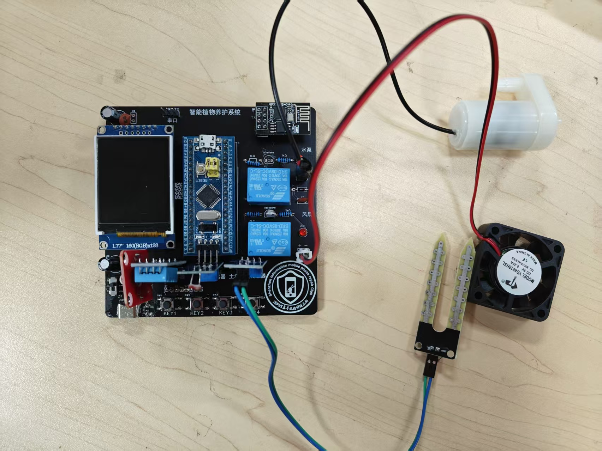
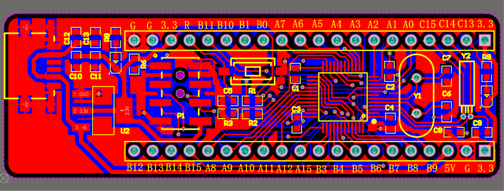
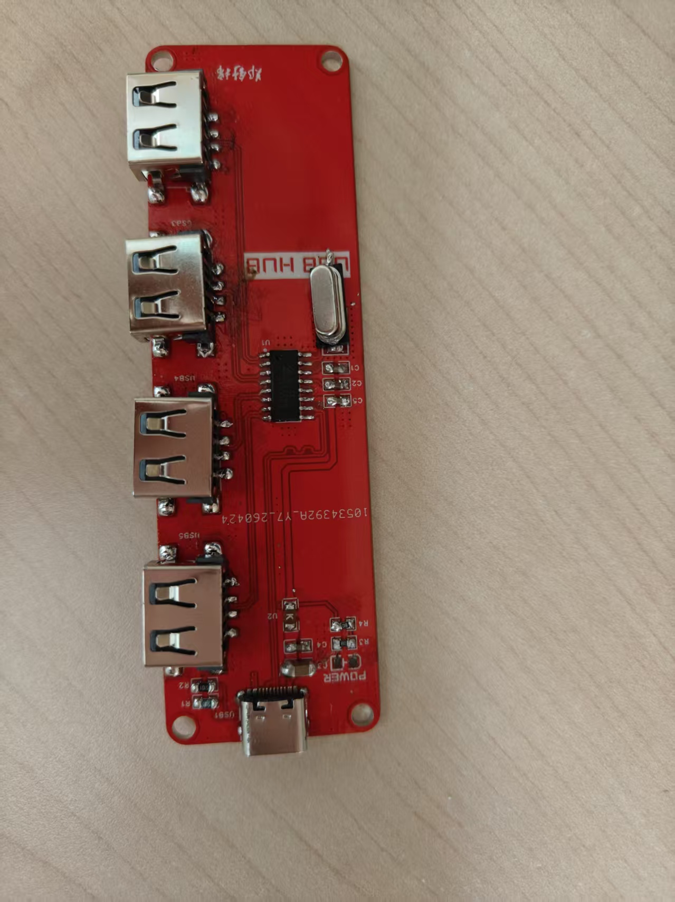
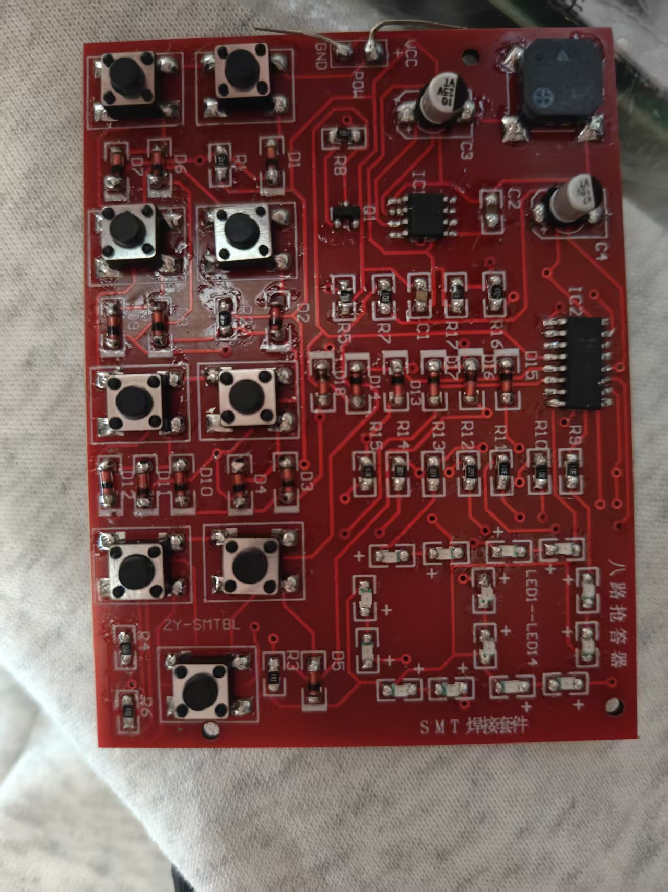
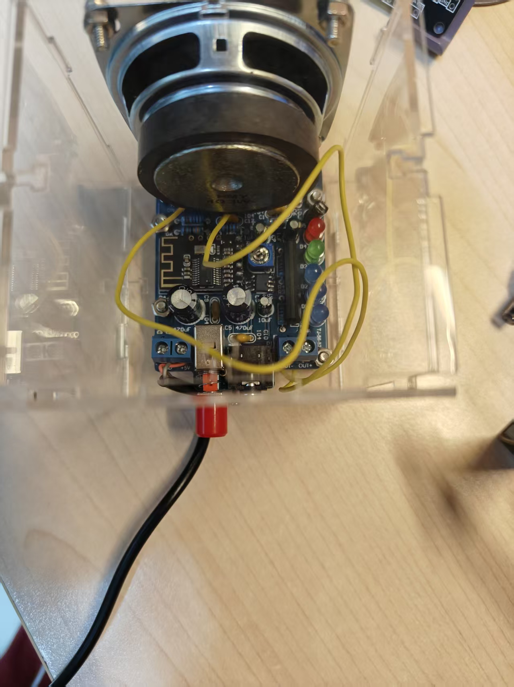
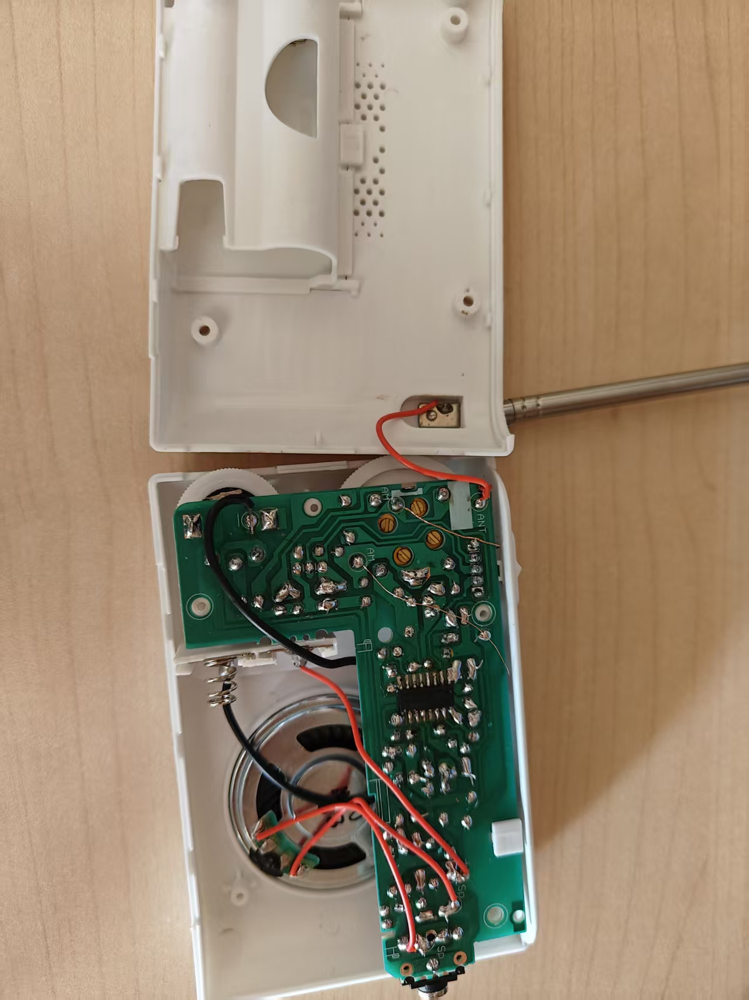
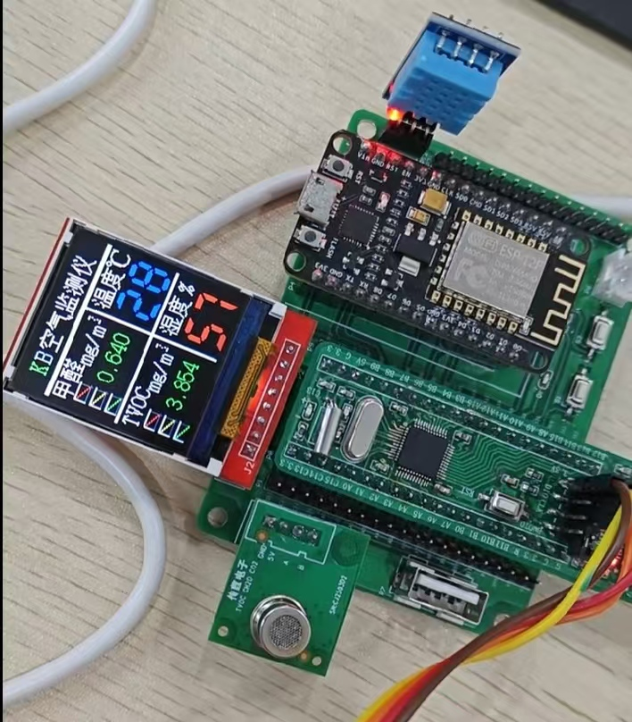
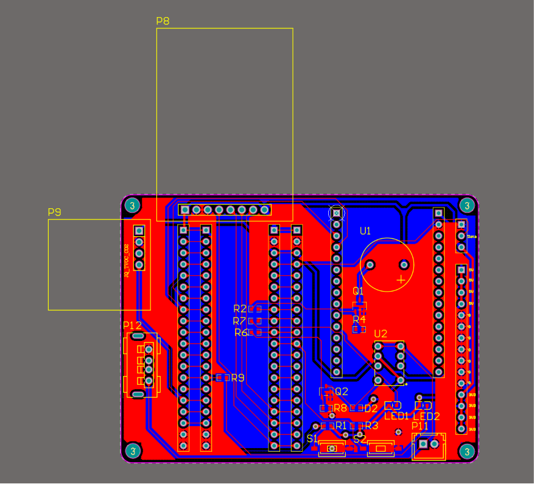
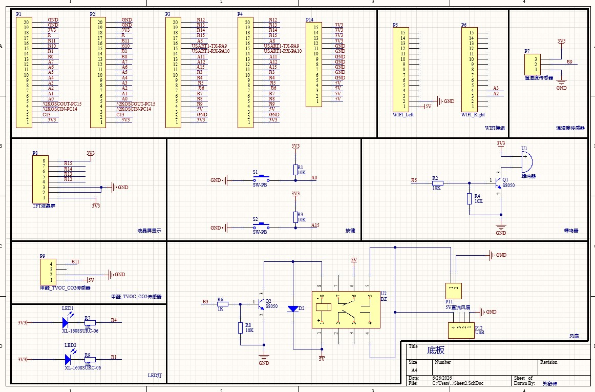

PROJECT 01 · 2025
智能植物养护系统
基于 STM32F103C8T6 独立完成的植物生长环境智能监测与自动调控系统。

实现内容
- 温湿度、土壤湿度与光照强度多路传感器采集
- 阈值比较自动控制风扇、水泵、LED 补光灯
- LCD 实时显示参数，按键在线设置阈值
STM32F103
多传感器
自动调控

About
就读于深圳信息职业技术大学，具备软硬结合的嵌入式系统项目经验。熟悉电路板全流程开发：能够使用嘉立创EDA独立完成原理图绘制与PCB Layout设计，熟练掌握SMD/DIP元器件的电烙铁与热风枪手工焊接，具备样板装配经验。能够使用万用表、示波器等仪器进行上电调试与故障排查，配合软硬件联调验证板级功能。
我关注的不只是"功能能运行"，也重视接口调试、任务协作、数据链路和问题定位，尝试把硬件与软件作为一个完整系统来理解。在校期间综合排名班级第 2，应聘硬件研发实习生岗位。
Education
🏅 成绩排名：专业前 5%，班级第 2
👥 班级职务：班级学习委员
📖 主修课程：程序设计基础、单片机应用技术、数字电子技术、模拟电子技术、电路分析、PCB 设计、Linux 系统编程、计算机视觉
Honors
Skills
Selected work
从通信链路到闭环控制，展示项目中实际完成的功能模块。
PROJECT 01 · 2025
基于 STM32F103C8T6 独立完成的植物生长环境智能监测与自动调控系统。

实现内容
PROJECT 02 · 2026
2026 年全国大学生电子设计竞赛（TI 杯）H 题项目，3 人团队协作。设计制作循线小车，行驶同时通过摆杆角度控制机构将钢球稳定在指定位置。负责单片机程序开发与软硬件联调。

实现内容
Gallery
独立焊接与设计的部分硬件作品。








Capabilities
C/C++、STM32 HAL/寄存器开发、FreeRTOS 任务与同步机制。
原理图与 PCB、焊接、示波器和逻辑分析仪辅助定位问题。
Linux、MQTT、BLE、Wi-Fi，以及传感器数据到云平台的链路。
Contact
邮件是最直接的联系方式，也可以在 GitHub 或 Gitee 查看我的动态。